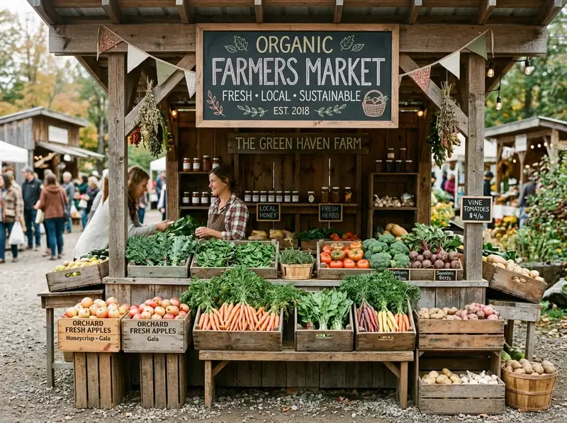
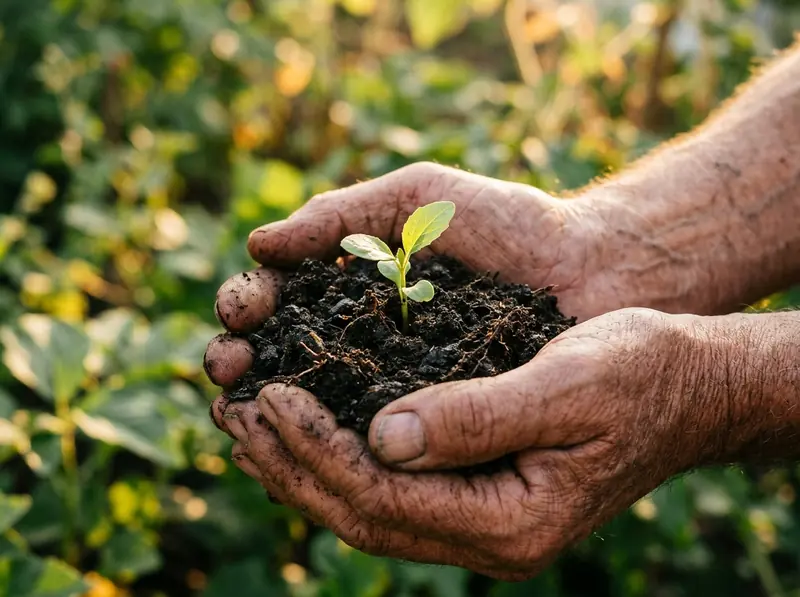
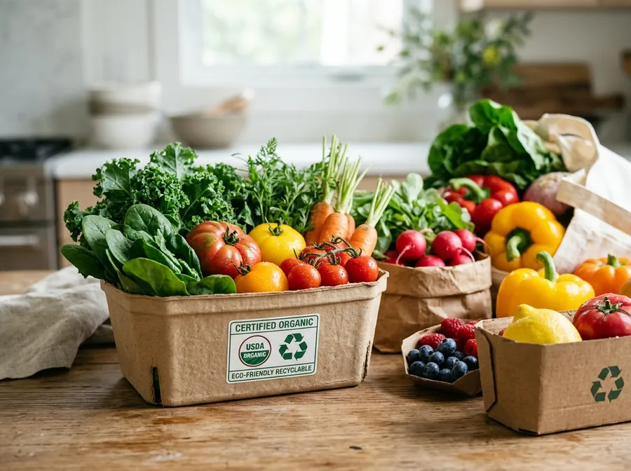
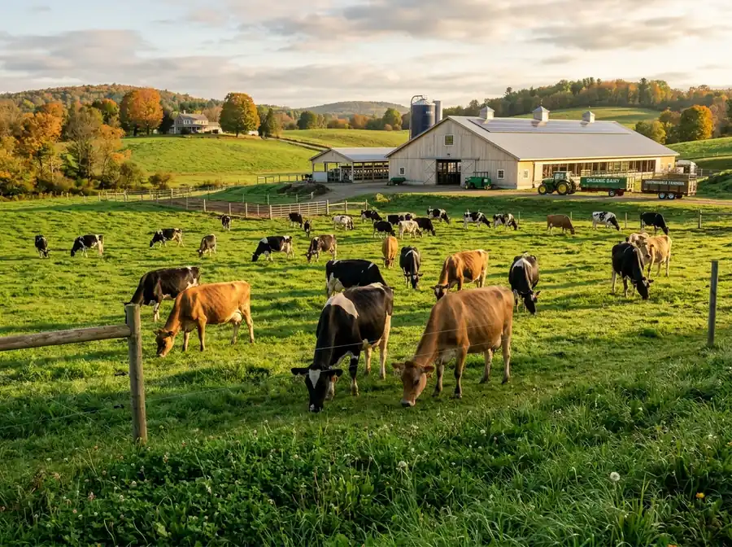

Our Story
Cultivating a healthier community through fresh, organic, and sustainable groceries.

It All Started with a Simple Seed
Founded in 2015, STACKLY began with a simple belief that everyone deserves access to healthy, natural, and truly sustainable food. Our founders, Jane and Mark, believed that everyone deserved access to high-quality organic produce without the premium price tag or the inconvenience of long commutes.
What started with just a handful of local farmers and a single delivery van has grown into a community of over 50,000 families across the country. Today, we partner with over 150 certified organic farms to ensure that the food on your family's table is as fresh as if you picked it yourself that very morning.
Our Mission
To revolutionize the way people shop for food by making organic, farm-fresh produce accessible, affordable, and conveniently delivered every single day.
Our Vision
To be the most trusted sustainable grocery platform in the world, fostering a global ecosystem where health, community, and the environment thrive together.
The Values We Live By
Freshness First
We never compromise on quality. Only harvest-fresh produce that meets our stringent farm standards.
Community
Empowering local farmers and strengthening regional agriculture is at the heart of our mission.
Unmatched Quality
Rigorous certifications and constant quality inspection from farm gate to your front doorstep.
Integrity
Transparent sourcing, fair farmer pricing, and zero hidden chemicals across every product.
Meet the Visionaries
The passionate team working together behind the scenes to bring the farm to your doorstep.
Marcus Sterling
Jane Robertson
David Chen
Elena Rodriguez
Caring for Our Planet and Our People
At STACKLY, sustainability isn't just a buzzword; it's how we operate every single day. From 100% recyclable packaging to carbon-neutral deliveries, here is how we work tirelessly to protect our shared planet:
Reusable Packaging
100% compostable and recycled paper grocery totes that reduce landfill waste by over 40 tons every year.
Electric Fleet
Over 80% of our city delivery fleet is powered by 100% clean electric energy to keep neighborhood emissions low.
Community Donations
Weekly donations of fresh, unsold organic produce to local shelters and community food banks.

Our Farm-to-Fork Journey
We operate an ultra-lean direct supply route, eliminating warehouse bottlenecks to deliver produce from regional soil to your kitchen within 24 hours.
Morning Harvest
Picked at dawn from partner organic fields at peak nutritional ripeness without chemical preservatives.
Quality Screening
Every single batch undergoes our 5-point organic purity test, checking for zero synthetic pesticide residue.
Eco-Smart Pack
Packaged in 100% biodegradable cornstarch wrapping and recyclable honeycomb crates for maximum protection.
Zero-Emission Drop
Dispatched via our electric refrigerated fleet directly to your doorstep in temperature-controlled conditions.

Strict Organic Standards You Can Trust
We hold the highest certification threshold in modern grocery retail. If an item doesn't meet our zero-residue benchmark, it never enters our inventory.
100% Non-GMO Verified
Every seed variety is heritage-preserved without artificial gene modifications or laboratory alterations.
Zero Synthetic Fertilizers or Pesticides
Only natural compost, bio-extracts, and crop rotation methods are permitted across all grower agreements.
Transparent QR Traceability
Scan any product label to see the grower's exact farm location, harvest timestamp, and soil test results.

Sunny Meadow Organic Pastures
Owned and operated by the Miller family for 3 generations, Sunny Meadow supplies STACKLY with 100% grass-fed organic milk, cultured Greek yogurt, and artisanal pasture cheeses. Their ethical, free-roaming dairy standard exemplifies our commitment to compassionate animal stewardship.
Frequently Asked Questions
Everything you need to know about our sourcing, quality verification, and delivery commitments.